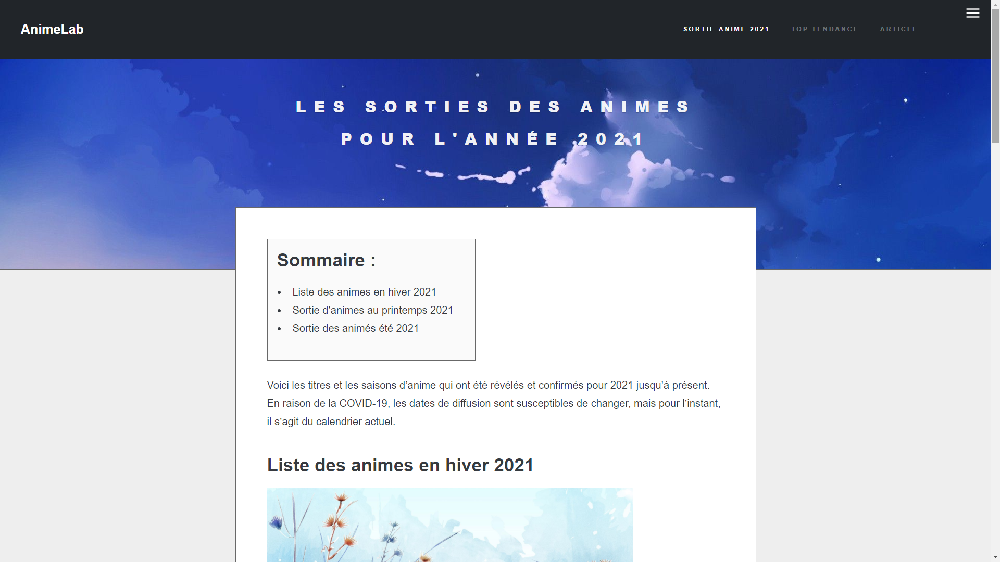
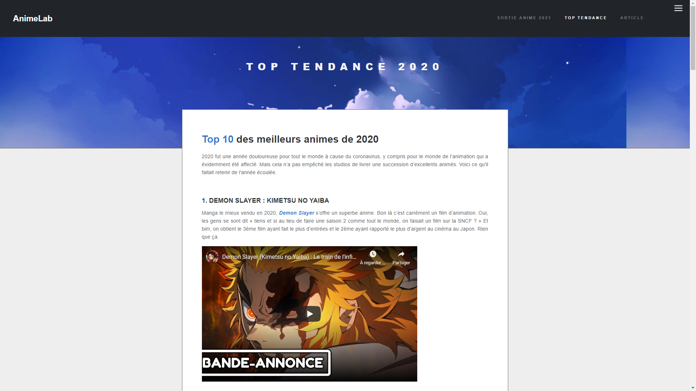
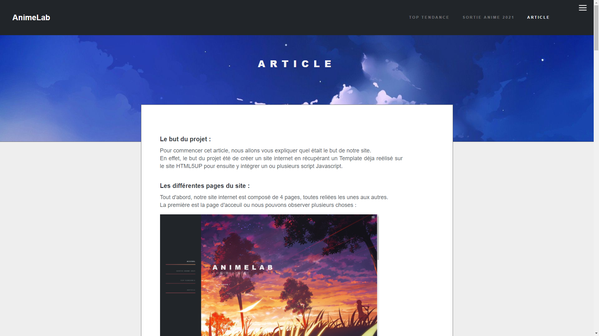

Le but du projet :
Pour commencer cet article, nous allons vous expliquer quel était le but de notre site.
En effet, le but du projet été de créer un site internet en récupérant un Template déja réalisé sur le site HTML5UP pour ensuite y intégrer un ou plusieurs scripts Javascript.
Les différentes pages du site :
Tout d'abord, notre site internet est composé de 4 pages, toutes reliées les unes aux autres.
La première est la page d'acceuil ou nous pouvons observer plusieurs choses :
Premièrement nous avons un menu de navigation qui va permet de se diriger vers les différentes sections du site, un simple clique vous permettra d'aller à ce qui vous intéresse directement sur la page d'acceuil.
Maintenant concentrons nous sur le principal rajout de la page qui sont les sliders.
En effet, lorsque nous descendons dans les sections nommées "Sortie Anime 2021" (#one) et "Top Tendance 2020" (#two) nous pouvons remarquer des sliders qui sont tout simplement des defilements d'images.
Ces sliders sont utilisable notament grace à du JavaScript que nous allons vous présenter. Voici à quoi ils ressemblent :

Ces sliders ont été récupérés sur le site Codepen. Afin qu'ils puissent s'intégrer parfaitement a notre site nous avons du un petit peu le modifié et maintenant, voici à quoi ressemble la construction du slider après modifications :
HTML :
CSS :
JavaScript :
Maintenant, abordons la deuxiemes page. Tout d'abord, nous avons gardé le menu initial de naviguation du template et nous avons remodulé la page à notre convenance avec le CSS notament au niveau de la dispositon des éléments. Pour ce faire nous avons du créer des classes (Class) ainsi que des identifiants (Id) afin qu'il n'y est pas de conflits dans les autres pages au niveau du CSS.
 Ensuite toujours dans la seconde page, nous avons inséré un sommaire. Celui-ci va permettre de naviguer sur la page directement en cliquant sur le titre que vous souhaitez.
Voici le code du sommaire:
HTML :
CSS :
Maintenant, en ce qui concerne la troisiemes page, nous avons réutilisé le paterne précédament défini sur la deuxieme page et nous avons simplement modifié/supprimé et rajouté des elements via l'HTML dans cette page.

Aussi, nous avons intégrés des vidéos des animés tendance de 2020. Pour les insérées nous sommes aller sur Youtube pour trouver les vidéos en question puis nous avons récuperés le code permettant de l'intégrer directement sur Youtube en cliquant sur le bouton "partager" puis sur "intégrer".

Enfin, la quatrième et dernière page est déstinée à la rédaction de notre article. Sur cette page nous avons pris le même menu et le même Template que sur les pages précédentes.
Afin d'afficher correctement les codes de notre site que nous voulons montrer nous avons utilisé l'API nsi.xyz, créée par nos professeurs.
Pour afficher le code une balise est nécéssaire, la voici :
On peut notamment modifier l'attribut "lang" qui va permettre de définir le language du code affiché. Il y a quatre languages qui sont disponiblent sur l'API : HTML, CSS, Python et JavaScript.
Egalement nos professeurs voulaient que l’on importe un menu dépliant permettant de relier notre site aux différents sites du domaine nsi.xyz. Pour cela nous avons importé un script permettant d’intégrer directement ce menu automatiquement sur le site:
Cette balise permet d’appeler un script externe qui permettra ensuite d’implanter un menu. Ce script est utilisable grâce au rajout de cette balise :
Ce menu dépliant est ajouté en haut à droite de la page :
Les difficultés rencontrées / Les solutions apportées :
Au niveau des difficultés rencontrées, la principale difficulté a été a cause de l'insertion du slider. En effet il a été difficile et long d'insérer un slider sans qu'il y est de conflit CSS. Nous avons réussi a intégrer le slider après de longue heures de test en modifiant la taille maximum du slider et en mettant le slider en position absolute pour que toutes les images se superposent au même endroit.
Nous avons également eu des soucis au niveau du CSS car il y avait des conflits avec les balises. pour remédier a ce probleme nous avons appris utilisé les classes et les identifiant qui permettent de résoudre ce probleme.
Mise a part ces quelques problèmes nous n’avons rencontrés aucuns autres problèmes concernant les codes des pages.